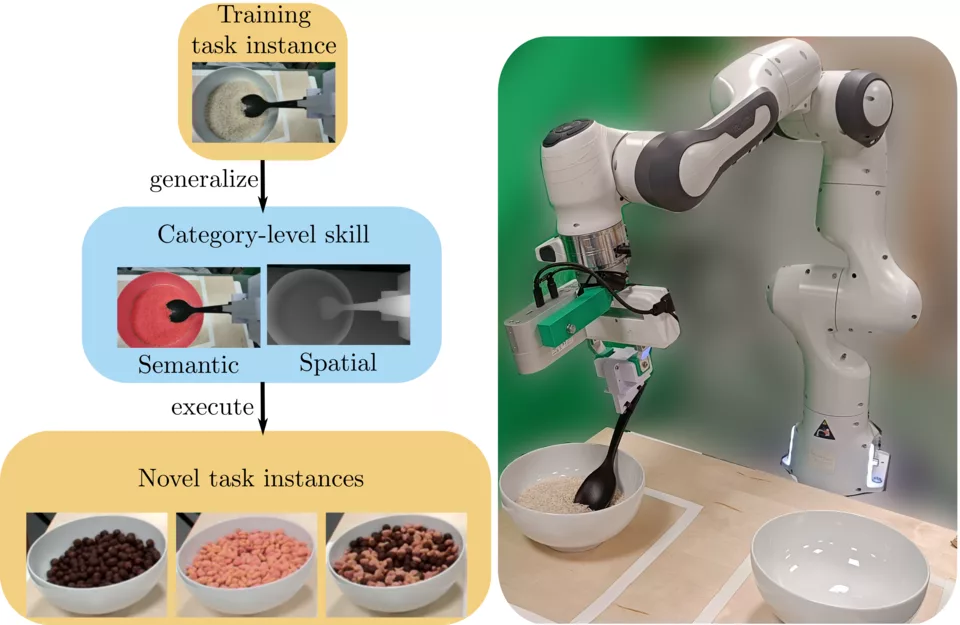
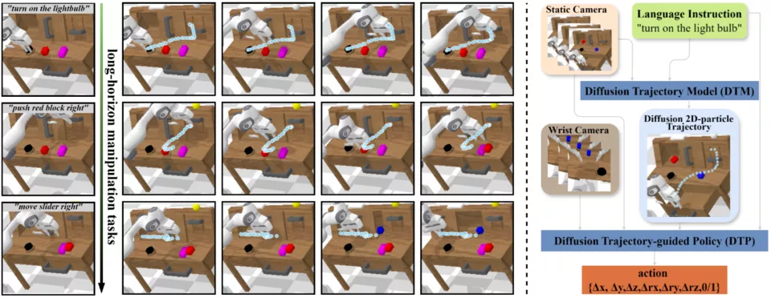
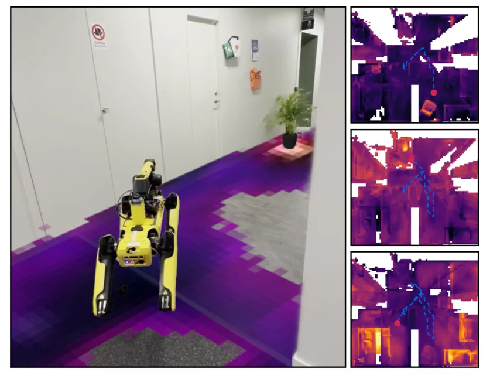
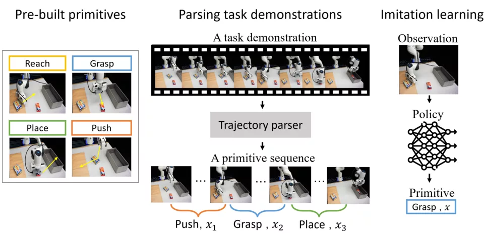
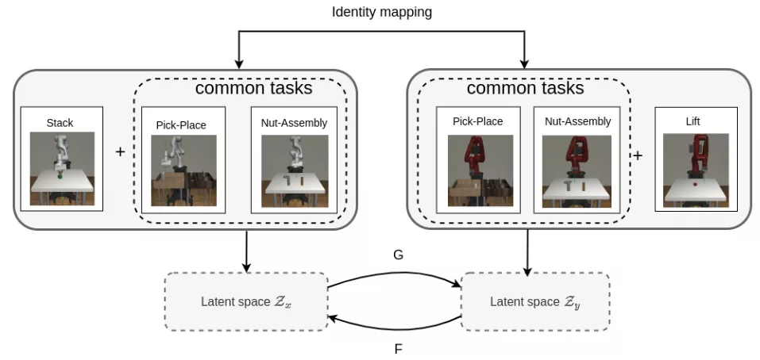
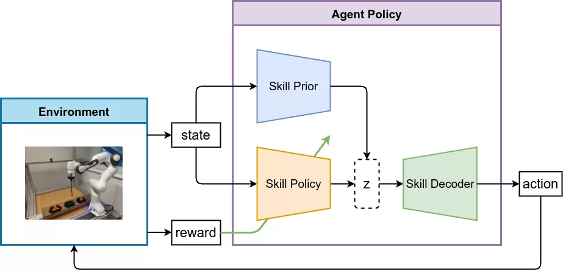
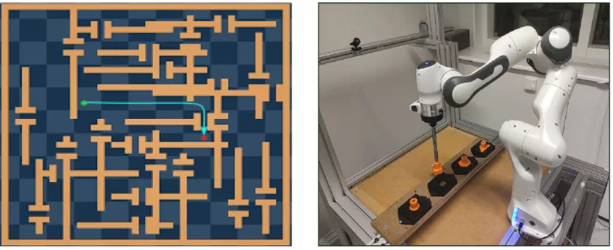
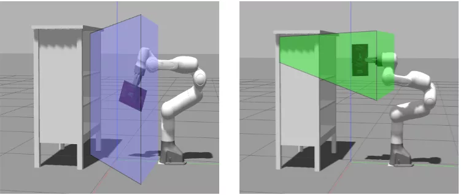

S2-Diffusion: Generalizing from Instance-level to Category-level Skills in Robot Manipulation
IEEE Robotics and Automation Letters (RA-L), 2025
yquantao at gmail dot com
I am a postdoctoral researcher at KTH Royal Institute of Technology, working with Prof. Olov Andersson and Prof. Danica Kragic. I am also a founding member of Qualia Robotics. Previously, I worked as a research scientist at ABB Corporate Research in Sweden.
I completed my PhD in Computer Science at Örebro University, advised by Prof. Todor Stoyanov and Prof. Johannes A. Stork. I was also a visiting PhD student at UT Austin, advised by Prof. Yuke Zhu.
I am interested in developing intelligent robotic agents capable of learning and executing tasks across diverse real-world environments.
Email / Google Scholar / GitHub / Twitter
Full publication list on Google Scholar.

IEEE Robotics and Automation Letters (RA-L), 2025

IEEE Robotics and Automation Letters (RA-L), 2025

IEEE International Conference on Robotics and Automation (ICRA), 2025

IEEE Robotics and Automation Letters (RA-L), 2024

IEEE International Conference on Automation Science and Engineering (CASE), 2023

IEEE Robotics and Automation Letters (RA-L), 2022

IEEE Robotics and Automation Letters (RA-L), 2022

European Conference on Mobile Robots (ECMR), 2021
I review for leading robotics journals and conferences.